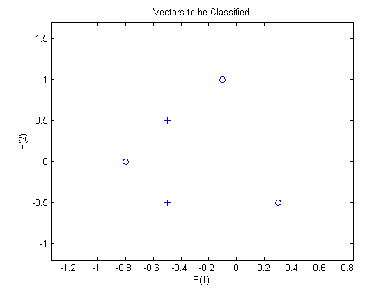
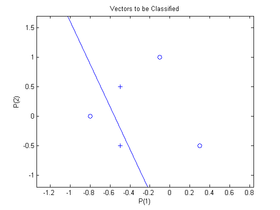

Linearly Non-separable Vectors
A 2-input hard limit neuron fails to properly classify 5 input vectors because they are linearly non-separable.
Each of the five column vectors in X defines a 2-element input vectors, and a row vector T defines the vector's target categories. Plot these vectors with PLOTPV.
X = [ -0.5 -0.5 +0.3 -0.1 -0.8; ...
-0.5 +0.5 -0.5 +1.0 +0.0 ];
T = [1 1 0 0 0];
plotpv(X,T);
 The perceptron must properly classify the input vectors in X into the categories defined by T. Because the two kinds of input vectors cannot be separated by a straight line, the perceptron will not be able to do it.
Here the initial perceptron is created and configured. (The configuration step is normally optional, as it is performed automatically by ADAPT and TRAIN.)
net = perceptron; net = configure(net,X,T);
Add the neuron's initial attempt at classification to the plot. The initial weights are set to zero, so any input gives the same output and the classification line does not even appear on the plot.
hold on
plotpv(X,T);
linehandle = plotpc(net.IW{1},net.b{1});
ADAPT returns a new network after learning on the input and target data, the outputs and error. The loop allows the network to repeatedly adapt, plots the classification line, and stops after 25 iterations.
for a = 1:25 [net,Y,E] = adapt(net,X,T); linehandle = plotpc(net.IW{1},net.b{1},linehandle); drawnow; end;
Note that zero error was never obtained. Despite training, the perceptron has not become an acceptable classifier. Only being able to classify linearly separable data is the fundamental limitation of perceptrons.